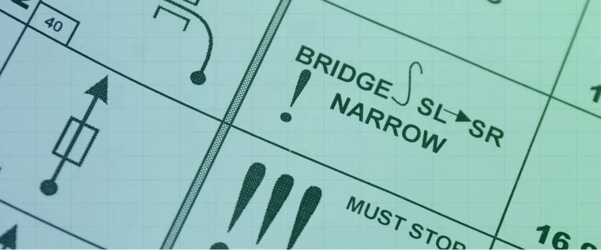
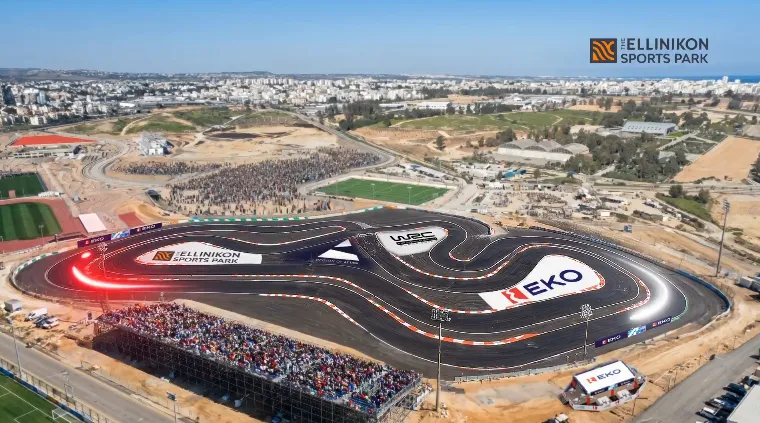
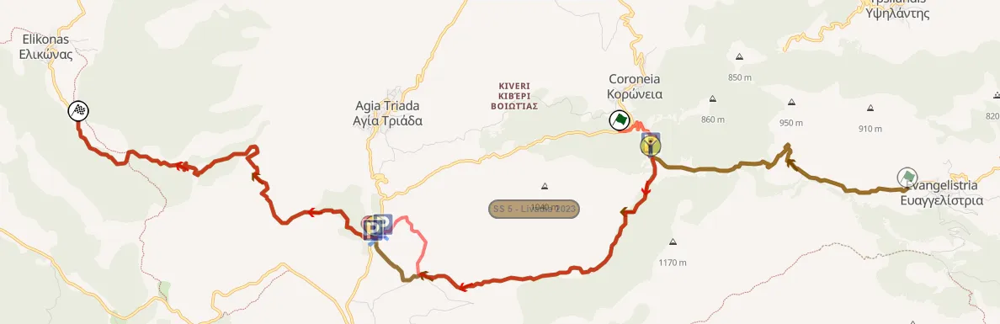

Ράλλυ Ακρόπολις 2026: Ανάλυση των Ειδικών Διαδρομών του Αγώνα
Thumbnail: @ World
Stage Maps: Rally-Maps.com
Acropolis Rally 2026 maps Rally Portugal 2026 stages Rally Portugal 2026
Το Ράλλυ Ακρόπολις επιστρέφει στην Πελοπόννησο για την 70ή του έκδοση, με το κέντρο του αγώνα να βρίσκεται στο Λουτράκι. Το μεγαλύτερο μέρος της διαδρομής του αγώνα είναι καινούριο, με μόλις μία ειδική διαδρομή να παραμένει αμετάβλητη σε σύγκριση με το 2025. Οι διοργανωτές θα χρησιμοποιήσουν ferry boat για να μεταφέρουν τα αγωνιστικά αυτοκίνητα από την Κόρινθο στην Ιτέα το βράδυ της Πέμπτης, κάτι που δεν έχει συμβεί εδώ και δεκαετίες στο παγκόσμιο πρωτάθλημα.
Πέμπτη
Η Πέμπτη περιλαμβάνει το παραδοσιακό Shakedown πριν τον αγώνα, καθώς και την εναρκτήρια ειδική: μια «head-to-head» Υπερειδική Διαδρομή στο Ελληνικό. Στη συνέχεια, τα πληρώματα θα κατευθυνθούν στην Κόρινθο, απ' όπου θα πάρουν το ferry για την Ιτέα. Είναι η πρώτη φορά που χρησιμοποιείται πλοίο για την μεταφορά αγωνιστικών στον εθνικό μας αγώνα φορά από το 1991!
Shakedown: Λουτράκι - 3.34km
Αλλαγές σε σχέση με το 2025: Η διαδρομή χρησιμοποιήθηκε τελευταία φορά το 2013 ως το Shakedown του αγώνα. Φέτος θα διεξαχθεί με την αντίθετη φορά. Από την επιστροφή του αγώνα στο καλεντάρι του WRC χρησιμοποιείται συχνά για δοκιμές πριν τον αγώνα από τις ομάδες.
Περιγραφή ειδικής: Η αρχή της ειδικής είναι γρήγορη αλλά τεχνική, με μείξη γρήγορων κομματιών με ωραία ροή, καθώς και ορισμένα τεχνικά τμήματα με συνεχόμενες αργές στροφές. Στα 2km υπάρχει μια σειρά από χασίματα, μετά τα οποία η ειδική περνά μέσα από ένα χωριό, μέσω ενός ασφάλτινου δρόμου. Το τέλος της διαδρομής είναι γρήγορο, σε έναν στενό δρόμο που "σκάβεται" εύκολα. Μεγάλο μέρος της διαδρομής έχει υποστεί σοβαρές καταστροφές από πυρκαγιές, με αποτέλεσμα το φυσικό τοπίο να είναι πλέον γυμνό από δέντρα και να δείχνει εντελώς διαφορετικό και άδειο σε σχέση με την τελευταία φορά που η ειδική ήταν κομμάτι του αγώνα.
SSS1 EKO SSS - 1.86km
Αλλαγές σε σχέση με το 2025: Ολοκαίνουργια υπερειδική στο Ελληνικό.

Περιγραφή ειδικής: Η φετινή Υπερειδική του Ακρόπολις λαμβάνει χώρα στο Ελληνικό. Η ασφάλτινη διαδρομή είναι "head to head" με δύο πληρώματα να αναμετρούνται "σώμα με σώμα" για το ποιος θα είναι ο νικητής αυτής της άτυπης κόντρας. Η διαδρομή είναι τεχνική, με πολλές στροφές διαρκείας, καθώς και ένα σημείο οπού τα αυτοκίνητα θα περνούν το ένα πάνω από το άλλο σε ένα σύμπλεγμα τούνελ/γέφυρας, όπως και στις υπερειδικές στο Ολυμπιακό Στάδιο.
Παρασκευή
Η Παρασκευή είναι η μεγαλύτερη μέρα του αγώνα, με 129km αγωνιστικής δράσης. Υπάρχει μόνο μία επαναλαμβανόμενη ειδική, η ΕΔ Στείρι. Ο αγώνας κατευθύνεται από την Ιτέα προς το Λουτράκι, το αντίστροφο από ότι συνέβαινε όταν ο αγώνας είχε ως κέντρο την Λαμία.
SS2 Βωξίτες - 22.97km
Αλλαγές σε σχέση με το 2025: Επιστρέφει για πρώτη φορά από το 2022. Τμήματα της διαδρομής χρησιμοποιήθηκαν με αντίθετη φορά το 2023 και το 2025 ως μέρος της ΕΔ Καρούτες.

Η διαδρομή της φετινής ειδικής Βωξίτες με κόκκινο, σε σύγκριση με την περσινή με πράσινο
Περιγραφή ειδικής: Οι Βωξίτες είναι μια εμβληματική ειδική του Ακρόπολις. Χρησιμοποιήθηκε για πρώτη φορά το 1980 και έκτοτε, αυτή η ανηφορική διαδρομή με φόντο τον κόλπο της Ιτέας έχει συμπεριληφθεί άλλες 22 φορές στο πρόγραμμα του αγώνα. Παίρνει το όνομά της από το ορυκτό του βωξίτη που εξορύσσεται στην περιοχή και δίνει στο χώμα της ειδικής ένα χαρακτηριστικό κοκκινωπό χρώμα.

Μια Lancia Delta S4 ανηφορίζει στην ειδική Βωξίτες το 1986
Η εκκίνηση είναι πολύ σκληρή και ανηφορική, έχοντας μία μείξη από φουρκέτες και γενικά γρήγορα κομμάτια. Στα 8,28km υπάρχει ένα σύντομο πέρασμα από ασφαλτινο δρόμο, όπου είχε μεγάλο ατύχημα ο Λάμπρος Αθανασσούλας το 2023, μετά το οποίο η ειδική ενώνεται με τον δρόμο του Προσηλίου, ο οποίος χρησιμοποιήθηκε πέρυσι ως μέρος της ΕΔ Καρούτες, αλλά με αντίθετη φορά.
Εκεί το οδόστρωμα γίνεται πιο ομαλό, ξεκινώντας ως κλειστό και τεχνικό κομμάτι σε φαρδύ δρόμο. Στα 13,6km ο δρόμος στενεύει καθώς η ειδική μπαίνει στο δάσος. Μετά από ένα ωραίο κομμάτι με ωραίο flow, γίνεται πιο τεχνική καθώς κατηφορίζει προς τον τερματισμό. Το κομμάτι αυτό είναι αρκετά σκληρό, έχοντας φυτευτές πέτρες στην επιφάνεια του δρόμου.
SS3 Παρνασσός - 22.28km
Αλλαγές σε σχέση με το 2025: Νέα ονομασία ειδικής, αλλά πρόκειται ουσιαστικά για την ειδική Δροσοχώρι από το 2012. Χρησιμοποιεί κομμάτια που είδαμε τελευταία φορά στην ΕΔ Γραβιά το 2021, αλλά με αντίθετη φορά.

Η διαδρομή του Παρνασσού με κόκκινο, σε σύγκριση με τη Γραβιά του 2021 με πράσινο
Περιγραφή ειδικής: Ο Παρνασσός ξεκινά σε έναν μεσαίου πλάτους δρόμο που έχει ωραία ροή και έχει έναν μεγάλο γκρεμό δίπλα στο δρόμο στα αριστερά.
Μετά από μια μεγάλη ευθεία, από τα 5km και έπειτα, η ειδική γίνεται πολύ τεχνική και αργή, με πολλές φουρκέτες και αργές στροφές. Ένα πιο γρήγορο κομμάτι διακόπτει τη σειρά των αργών στροφών στα 10,33km, αλλά δεν κρατάει πολύ, αφού από το 11,62 έως το 13,2km ακολουθούν μόνο ανηφορικές φουρκέτες.
Μετά από αυτό η διαδρομή γίνεται πιο γρήγορη, με ένα ταχύτατο κατηφορικό κομμάτι να ξεκινά από τα 15,6km. Στα 19km, μετά από μια κλειστή φουρκέτα, η ειδική ανοίγει και αποκτά ρυθμό, με το τελείωμά της να χρησιμοποιείται συχνά για δοκιμές από πολλές ομάδες από το 2021 και μετά.
Η ειδική προοριζόταν να είναι η μεγαλύτερη σε μήκος, αγγίζοντας τα 30 χιλιόμετρα με ένα νέο τμήμα στα Καλάνια. Δυστυχώς, λόγοι ανωτέρας βίας οδήγησαν στην αφαίρεση αυτού του κομματιού από τη διαδρομή.
SS4/6 Στείρι - 24.18km
Αλλαγές σε σχέση με το 2025: Είναι η μόνη ειδική στο φετινό ράλλυ που παραμένει αμετάβλητη σε σύγκριση με πέρυσι.
Περιγραφή Ειδικής: Η εκκίνηση της ειδικής είναι στις ανεμογεννήτριες κοντά στον Καρακόλιθο, σε έναν ανηφορικό, μέτρια φαρδύ, δρόμο με καλό οδόστρωμα, με γρήγορα κομμάτια και φουρκέτες. Στα 7.7km ενώνεται με την παλιά ειδική, και λίγο μετά γίνεται στενή και σκληρή. Στα 15.2km υπάρχει ένα ξέφωτο μετά το οποίο η ειδική γίνεται σπαστήρι και τεχνική, με μία δύσκολη κατηφορική φουρκέτα στα 19.96km.
Λίγο αργότερα η ειδική φτάνει το μέγιστο της υψόμετρο και μετά γίνεται κατηφορική. Μια σειρά κατηφορικών στενών φουρκέτων ακολουθούν, με γκρεμούς στην εξωτερική τους. Το τέλος της ειδικής είναι σε έναν γρήγορο δρόμο, που είναι στενός και σκληρός.
SS5 Ελικώνας - 17.80km
Αλλαγές σε σχέση με το 2025: Το όνομα «Ελικώνας» επιστρέφει στο πρόγραμμα του Ακρόπολις για πρώτη φορά από το 2012, αλλά στην πραγματικότητα πρόκειται για την ΕΔ Λιβαδειά του 2022 και 2023, με νέα εκκίνηση.

O φετινός Ελικώνας με κόκκινο, σε σύγκριση με τη Λιβαδειά του 2023 με καφέ
Περιγραφή ειδικής: Η εκκίνηση της ειδικής είναι σε άσφαλτο, με τη διαδρομή να μπαίνει γρήγορα στο χώμα με μια σειρά από φουρκέτες. Στα 1,64km συναντά τη διαδρομή της ειδικής Λιβαδειά, όπου και γίνεται στενή και πολύ σκληρή. Υπάρχει ένα πέρασμα μέσα από δύο νταμάρια στα 4,50km και 6km, με ένα μεγάλο άλμα στα 5,20km.
Φέτος, η ειδική δεν θα περάσει δίπλα από το γρήγορο κομμάτι με τον σταθμό της ΔΕΗ, αλλά αντίθετα κατευθύνεται ανηφορικά σε έναν νέο δρόμο που ανοίχτηκε για τη συντήρηση των κοντινών ανεμογεννητριών. Στη συνέχεια κατηφορίζει γρήγορα, συναντώντας τον κλασικό δρόμο του Ελικώνα στα 9,5km, αμέσως μετά από μια ασφάλτινη φουρκέτα. Εκεί, η ειδική γίνεται πιο φαρδιά και πιο γρήγορη, περιλαμβάνοντας στροφές γρήγορης και μεσαίας ταχύτητας σχεδόν στο σύνολό της.
SS7 Θήβα - 17.81km
Αλλαγές σε σχέση με το 2025:: Η φετινή χάραξη της Θήβας είναι μία μείξη από την εκκίνηση του 2025 και του τερματισμού του 2024.
Περιγραφή ειδικής: Η Θήβα είναι μια ειδική με πολλές αλλαγές χαρακτήρα και χρησιμοποιεί πολλούς διαφορετικούς δρόμους εντός του λόφου του Μοσχοποδίου.
Η εκκίνηση είναι σε αμμώδη και τεχνικό δρόμο και έχει ένα μεγάλο άλμα λίγο πριν στρίψει στον κλασικό ανηφορικό δρόμο.
Ακολουθεί ένα κυρίως γρήγορο κομμάτι, με ένα άλμα στα 5.58km, μετά από το οποίο η ειδική πηγαίνει σε έναν νέο δρόμο, που είναι πιο στενός και σκληρός. Η υπόλοιπη ειδική είναι στους δρόμους εντός του Μοσχοποδίου, και χρησιμοποιεί πολλούς διαφορετικούς δρόμους που μπορεί να είναι ή αμμώδεις, ή πιο σκληροί με αρκετές πέτρες.
Από τα 7,67km μέχρι τα 12,95km, η ειδική γίνεται κλειστή και τεχνική, φτάνοντας σε ένα γνωστό σημείο θεατών που χαρακτηρίζεται από μια φουρκέτα.
Από εκεί και πέρα, ακολουθεί κυρίως τη διαδρομή του 2024, όντας αρκετά κλειστή κάνοντας χρήση φαρδιών αλλά και στενών δρόμων. Το τέλος της ειδικής είναι αρκετά γρήγορο, με τρία μικρά χασίματα ακριβώς πριν τον τερματισμό.
Σάββατο
Το Σάββατο μπορεί να θεωρηθεί μια εντελώς καινούργια μέρα. Η ειδική διαδρομή «Κεφαλάρι» είναι η μόνη που θα διεξαχθεί με την ίδια διαδρομή σε σχέση με το 2013, ενώ οι υπόλοιπες είναι είτε εντελώς καινούργιες, είτε έχουν νέα χάραξη ή φορά. Υπάρχουν τέσσερις ειδικές διαδρομές, αλλά μόνο δύο από αυτές επαναλαμβάνονται στο απογευματινό λουπ, λόγω των μεγάλων απλών διαδρομών.
SS8/12: Γυμνό - 19.60km
Αλλαγές σε σχέση με το 2025: Χρησιμοποιείται για πρώτη φορά από το 2013, αν και πιο μεγάλη, με νέο κομμάτι μετά την παλιά εκκίνηση, και με αντίθετη φορά. Η ειδική υπάρχει στη σειρά βιντεοπαιχνιδιών DiRT Rally.
Περιγραφή ειδικής: Η εκκίνηση της ειδικής γίνεται σε τσιμεντένιο δρόμο που γρήγορα μπαίνει στο χώμα. Είναι ανηφορική, τεχνική, γεμάτη λακούβες, με πολλές αργές στροφές σε στενό δρόμο. Περίπου στα 2,4km, η ειδική παραμένει σκληρή αλλά αποκτά περισσότερo flow, όντας κυρίως medium-speed. Αρχικά συνεχίζει να είναι ανηφορική, αλλά από τα 6km και μετά γίνεται κατηφορική, με μια πολύ γρήγορη κατάβαση να ξεκινά από τα 10,3km.
Στη συνέχεια, από τα 13km μέχρι τον τερματισμό, η διαδρομή είναι γεμάτη φουρκέτες που κατεβαίνουν το βουνό. Σε αντίθεση με προηγούμενες χρονιές, ο τερματισμός έρχεται μετά από ένα ασφάλτινο κομμάτι, το οποίο περιέχει επίσης κατηφορικές φουρκέτες.
SS9 Κολλίνες - 21.30km
Αλλαγές σε σχέση με το 2025: Ολοκαίνουργια ειδική, δεν έχει χρησιμοποιηθεί ποτέ ξανά στο Ράλλυ Ακρόπολις. Ο Dani Sordo έκανε εδώ τις δοκιμές του πριν τον αγώνα του 2009.
Περιγραφή ειδικής: Οι Κολλίνες σηματοδοτούν την πρώτη εμφάνιση ειδικής του Ράλλυ Ακρόπολις στην Αρκαδία από το 1985! Τμήματά της χρησιμοποιήθηκαν στο Ράλλυ Μαύρο Ρόδο του 2007.
Ξεκινά με ένα πολύ κλειστό κομμάτι μέσα στο δάσος, με την επιφάνεια του δρόμου να είναι αρκετά αμμώδης. Η ειδική έχει ένα μικρό γρήγορο κομμάτι από τα 4,51 έως τα 6km, μετά το οποίο ακολουθεί ένα πέρασμα από νερά στα 6,7km. Μετά από αυτό, η δοκιμασία γίνεται πολύ τεχνική και αργή, σε ένα κομμάτι που έχει μοιάζει πολύ με το Ράλλυ Πορτογαλίας, παραμένοντας έτσι για τα επόμενα 10 χιλιόμετρα.
Από τα 17km και μετά, η ειδική γίνεται πολύ γρήγορη, με ένα μεγάλο watersplash στα 17,96km. Στη συνέχεια βγαίνει από το δάσος, όπου συνεχίζει να είναι ταχύτατη σε ένα ανοιχτό κομμάτι, πριν τον τερματισμό.
SS10/13 Μαίναλο - 14.78km
Αλλαγές σε σχέση με το 2025: Άλλη μια ολοκαίνουργια ειδική που δεν έχει χρησιμοποιηθεί ποτέ ξανά στο Ακρόπολις. Ο Sebastien Loeb είχε κάνει το PET του εδώ το 2009.
Περιγραφή ειδικής: Το Μαίναλο ξεκινά με ένα κομμάτι με ωραίο flow σε έναν φαρδύ δρόμο μέσα σε δάσος, πριν φτάσει σε μια μεγάλη ευθεία που διαρκεί σχεδόν ένα χιλιόμετρο.
Στη συνέχεια η ειδική γίνεται ελαφρώς πιο τεχνική, παραμένοντας όμως γρήγορη, και περνά μέσα από ένα οροπέδιο στα 9km.
Από τα 10,73 έως τα 11,25km υπάρχει ένα σύντομο ασφάλτινο τμήμα που είναι κατηφορικό, κλειστό αλλά γρήγορο. Μετά από αυτό η διαδρομή μπαίνει σε ένα "Mickey Mouse" κομμάτι, όπου η ειδική γίνεται ιδιαίτερα twisty σε ένα ανοιχτό οροπέδιο, με το δρόμο να έχει συνεχόμενες κλειστές στροφές διαρκείας.
SS11: Κεφαλάρι - 18.17km
Αλλαγές σε σχέση με το 2025:: Άλλη μια ειδική που επιστρέφει από την τελευταία φορά που αγώνας είχε ως κέντρο το Λουτράκι, σε πανομοιότυπη μορφή με το 2013.
Περιγραφή ειδικής: Η εκκίνηση της ειδικής είναι σε έναν κλειστό και στενό ανηφορικό δρόμο, που έχει έναν μεγάλο γκρεμό στη δεξιά του πλευρά. To κομμάτι αυτό είναι αρκετά αμφιθεατρικό, με τους θεατές να μπορούν να δουν και να ακούσουν τα αυτοκίνητα για πολλή ώρα.
Στο κομμάτι αυτό βρίσκεται η στροφή όπου ο Dani Sordo και ο Henning Solberg χτύπησαν τον ίδιο ακριβώς βράχο το 2009.
Ακολουθεί ένα πανέμορφο γρήγορο κομμάτι υψηλής σε ένα οροπέδιο. Η ειδική ξαναμπαίνει στο δάσος στη συνέχεια, με τα επόμενα 6,5km να είναι σε έναν κλειστό και στενό δρόμο, που μπορεί να γίνει αρκετά σκληρός καθώς έχει φυτευτές πέτρες στην επιφάνεια, ενώ το χώμα γίνεται πιο αργιλικό και loose. H υπόλοιπη ειδική αποκτά περισσότερη ροή, με το δρόμο να είναι ελαφρώς πιο φαρδύς και κατηφορικός, με τμήματα πατημένα και μέσης ταχύτητας.
Κυριακή
Η Κυριακή περιλαμβάνει δύο επαναλαμβανόμενες ειδικές στην περιοχή του Λουτρακίου. Οι Άγιοι Θεόδωροι δεν έχουν σχεδόν καμία σχέση με την περσινή ειδική, χρησιμοποιώντας ουσιαστικά την ίδια διαδρομή με την ειδική της Κινέτας (2012-2013), ενώ το Λουτράκι διαθέτει διαφορετικό τερματισμό, που ήταν ο τερματισμός των Αγίων Θεοδώρων πέρσι.
SS14/16 Άγιοι Θεόδωροι - 25.39km
Αλλαγές σε σχέση με το 2025: Ο δρόμος της Κινέτας επιστρέφει για πρώτη φορά από το 2013, και στη συνέχεια η ειδική συνεχίζει στη χάραξη των Αγίων Θεοδώρων του 2021. Πανομοιότυπη με τις εκδοχές της ειδικής Κινέτα του 2012 και 2013.

Η φετινή διαδρομή των Αγίων Θεοδώρων με κόκκινο, σε σύγκριση με την έκδοση του 2021 με πράσινο
Περιγραφή ειδικής: Η ειδική ξεκινά σε έναν στενό και τεχνικό δρόμο που έχει κάποια μπαλώματα από τσιμέντο. Στα 1,54km συναντά έναν πιο φαρδύ δρόμο που είναι πιο smooth. Είναι γρήγορος με καλή ροή, διαθέτοντας μια σειρά από χασίματα. Στα 3,84km η ειδική μπαίνει σε έναν στενό και σκληρό ανηφορικό δρόμο, ο οποίος είναι κυρίως γρήγορος με εξαίρεση μια σειρά από κλειστές στροφές στα 4,63km.
Έπειτα, ξανασυναντά τον προηγούμενο φαρδύ δρόμο στα 9,78km για ένα γρήγορο κατηφορικό κομμάτι, χρησιμοποιώντας τμήματα μιας αντιπυρικής ζώνης. Μετά από ένα κλειστό τμήμα σε στενότερο δρόμο που είναι πολύ σκληρός, με πολλές φυτευτές πέτρες, η ειδική περνά σε ένα ασφάλτινο κομμάτι στα 14km. Εκεί, τα πληρώματα πάνε "τέρμα γκάζι" μέχρι μια σειρά από κατηφορικές φουρκέτες στα 17,1km, μετά τις οποίες η ειδική επιστρέφει στο χώμα. Αυτό το κομμάτι δεν έχει χρησιμοποιηθεί από το 2022 και είναι πολύ τεχνικό, ιδιαίτερα αργό και απαιτητικό μετά τα 20km, με φουρκέτες και αργές στροφές.
SS15/17 Λουτράκι - 16.61km
Αλλαγές σε σχέση με το 2025: Έχει την ίδια εκκίνηση με πέρυσι, αλλά χρησιμοποιεί τον τερματισμό της περσινής ειδικής των Αγίων Θεοδώρων. Ουσιαστικά πρόκειται για τα Πίσια του 2023.

Το φετινό Λουτράκι με κόκκινο, σε σύγκριση με το Λουτράκι του 2025 με πράσινο και τους Αγίους Θεοδώρους του 2025 με μπλε
Περιγραφή ειδικής: Η ειδική είναι αρχικά τεχνική και κλειστή για τα πρώτα τρία χιλιόμετρα, πριν γίνει πιο γρήγορη. Περίπου στα 9km, η ειδική γίνεται ξανά αργή, με μια σειρά από φουρκέτες, μετά την οποία συναντά τον δρόμο της περσινής ειδικής των Αγίων Θεοδώρων. Αν και αρχικά κλειστός, ο δρόμος γίνεται πολύ πιο γρήγορος μετά τα 12,4km, με ένα "flat-out" κομμάτι να ακολουθεί σε έναν δρόμο που είναι στενός και σκληρός, ο οποίος συχνά σκάβεται με κάθε πέρασμα και δημιουργεί βαθιά αυλάκια (ruts).
Τι θα άλλαζα
Η νέα βάση του εθνικού μας αγώνα φέρνει και νέες προκλήσεις για τους διοργανωτές. Πιστεύω πως τα χιλιόμετρα απλών διαδρομών το Σάββατο είναι υπερβολικά πολλά, ενώ το σύστημα 4-2 είναι λίγο δυσνόητο. Ίσως να ήταν καλύτερο ένα σύστημα 3x2, με το Κεφαλάρι στο ένα loop και τις Κολλίνες στο άλλο.
Αναφορικά με τις ειδικές που ήδη υπάρχουν στον αγώνα, εφόσον υπάρχουν αρκετές καινούριες (όπως οι Κολλίνες και το Μαίναλο), θα ήθελα να τις δω πρώτα πριν τις κρίνω. Θα προτιμούσα μία διαφορετική χάραξη στους Αγίους Θεοδώρους, με ίδια εκκίνηση με φέτος αλλά τερματισμό ίδιο με πέρσι, ή στα Πίσσια, ενώ και το Λουτράκι θα μπορούσε να έχει μία διαφορετική χάραξη.
Σετ χαράξεων για τις ΕΔ Λουτράκι για Άγιοι Θεόδωροι που θα προτιμούσα


Comments